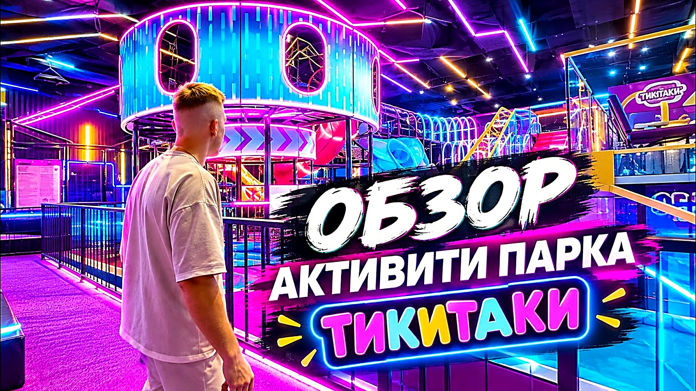

Медиа

Фото сверху, текст подписью.
Текст · 755 знаков
📌 **UNITRAMP: детские и семейные парки под ключ** Проектируем, производим и монтируем парки для торговых центров с 2014 года. ▪️ **81 реализованный проект** в 63 городах и 5 странах ▪️ собственное производство в Новосибирске: три цеха на 2 500 м² ▪️ своя монтажная бригада, монтаж на объекте 10–21 день ▪️ оборудование по ТР ЕАЭС 038 и ТР ТС 042, гарантия 12 месяцев **Чем помогаем:** зонирование и концепция, финансовая модель, фирменный стиль и дизайн, подбор и производство оборудования, монтаж. Что здесь публикуем: #кейс реализованные проекты #процесс производство и монтаж #разбор ответы на вопросы собственников #новости открытия и события 📩 __Обсудить проект: info@unitramp.ru или 8-800-700-78-09__ 🔍 unitramp.ru 📞 8-800-700-78-09 #юнитрамп